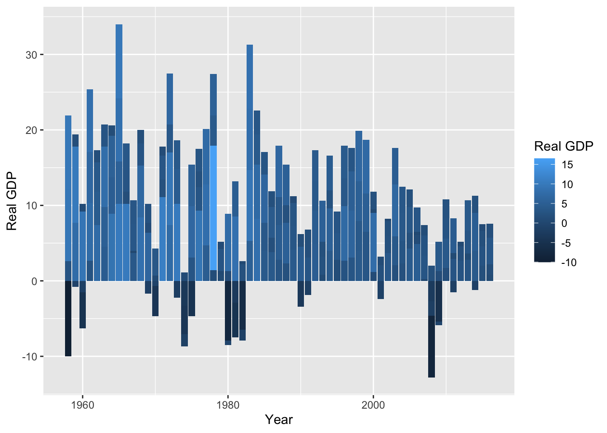
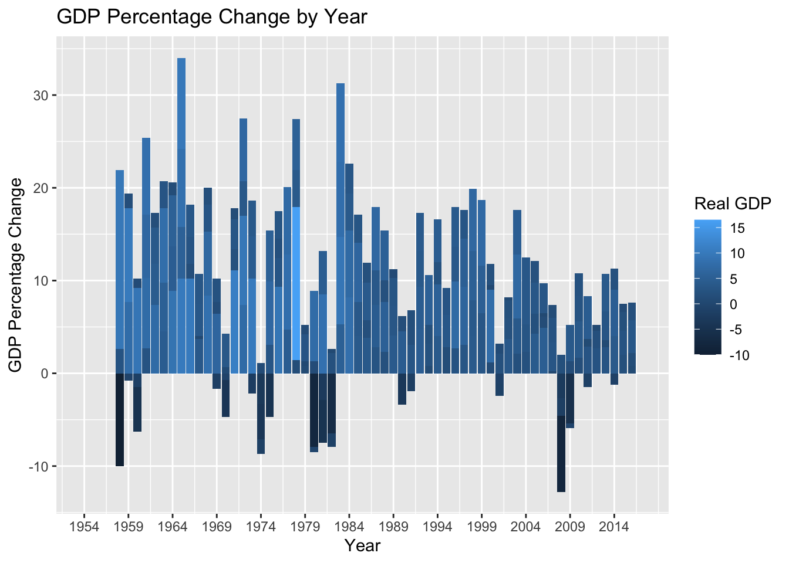
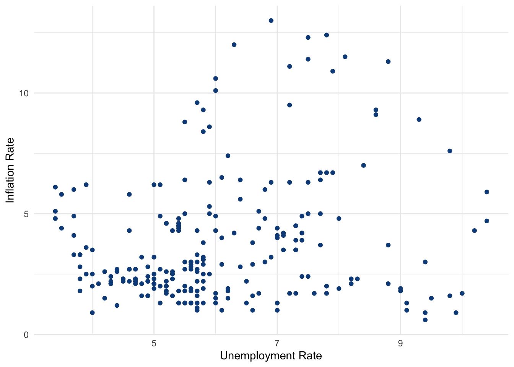

Code
library(tidyverse)
library(summarytools)
knitr::opts_chunk$set(echo = TRUE, warning=FALSE, message=FALSE)Yakub Rabiutheen
August 16, 2022
Loaded the Fed Funds Dataset
Add any comments or documentation as needed. More challenging data may require additional code chunks and documentation.
Doing a Head of the Dataset to get a view of what the Data Looks like.
# A tibble: 6 × 10
Year Month Day Federal Fu…¹ Feder…² Feder…³ Effec…⁴ Real …⁵ Unemp…⁶ Infla…⁷
<dbl> <dbl> <dbl> <dbl> <dbl> <dbl> <dbl> <dbl> <dbl> <dbl>
1 1954 7 1 NA NA NA 0.8 4.6 5.8 NA
2 1954 8 1 NA NA NA 1.22 NA 6 NA
3 1954 9 1 NA NA NA 1.06 NA 6.1 NA
4 1954 10 1 NA NA NA 0.85 8 5.7 NA
5 1954 11 1 NA NA NA 0.83 NA 5.3 NA
6 1954 12 1 NA NA NA 1.28 NA 5 NA
# … with abbreviated variable names ¹`Federal Funds Target Rate`,
# ²`Federal Funds Upper Target`, ³`Federal Funds Lower Target`,
# ⁴`Effective Federal Funds Rate`, ⁵`Real GDP (Percent Change)`,
# ⁶`Unemployment Rate`, ⁷`Inflation Rate`Getting the column names
[1] "Year" "Month"
[3] "Day" "Federal Funds Target Rate"
[5] "Federal Funds Upper Target" "Federal Funds Lower Target"
[7] "Effective Federal Funds Rate" "Real GDP (Percent Change)"
[9] "Unemployment Rate" "Inflation Rate" Renaming columns as I had difficulty invoking the column name in code.
[1] "Year" "Month"
[3] "Day" "Federal Funds Target Rate"
[5] "Federal Funds Upper Target" "Federal Funds Lower Target"
[7] "Effective Federal Funds Rate" "Real GDP"
[9] "Unemployment Rate" "Inflation Rate" Summary of the Datset and found a lot of NAs to clean up.
Year Month Day Federal Funds Target Rate
Min. :1954 Min. : 1.000 Min. : 1.000 Min. : 1.000
1st Qu.:1973 1st Qu.: 4.000 1st Qu.: 1.000 1st Qu.: 3.750
Median :1988 Median : 7.000 Median : 1.000 Median : 5.500
Mean :1987 Mean : 6.598 Mean : 3.598 Mean : 5.658
3rd Qu.:2001 3rd Qu.:10.000 3rd Qu.: 1.000 3rd Qu.: 7.750
Max. :2017 Max. :12.000 Max. :31.000 Max. :11.500
NA's :442
Federal Funds Upper Target Federal Funds Lower Target
Min. :0.2500 Min. :0.0000
1st Qu.:0.2500 1st Qu.:0.0000
Median :0.2500 Median :0.0000
Mean :0.3083 Mean :0.0583
3rd Qu.:0.2500 3rd Qu.:0.0000
Max. :1.0000 Max. :0.7500
NA's :801 NA's :801
Effective Federal Funds Rate Real GDP Unemployment Rate
Min. : 0.070 Min. :-10.000 Min. : 3.400
1st Qu.: 2.428 1st Qu.: 1.400 1st Qu.: 4.900
Median : 4.700 Median : 3.100 Median : 5.700
Mean : 4.911 Mean : 3.138 Mean : 5.979
3rd Qu.: 6.580 3rd Qu.: 4.875 3rd Qu.: 7.000
Max. :19.100 Max. : 16.500 Max. :10.800
NA's :152 NA's :654 NA's :152
Inflation Rate
Min. : 0.600
1st Qu.: 2.000
Median : 2.800
Mean : 3.733
3rd Qu.: 4.700
Max. :13.600
NA's :194 Dropping all NAs
# A tibble: 236 × 10
Year Month Day Federal F…¹ Feder…² Feder…³ Effec…⁴ Real …⁵ Unemp…⁶ Infla…⁷
<dbl> <dbl> <dbl> <dbl> <dbl> <dbl> <dbl> <dbl> <dbl> <dbl>
1 1958 1 1 NA NA NA 2.72 -10 5.8 3.2
2 1958 4 1 NA NA NA 1.26 2.6 7.4 2.4
3 1958 7 1 NA NA NA 0.68 9.6 7.5 2.4
4 1958 10 1 NA NA NA 1.8 9.7 6.7 1.7
5 1959 1 1 NA NA NA 2.48 7.7 6 1.7
6 1959 4 1 NA NA NA 2.96 10.1 5.2 1.7
7 1959 7 1 NA NA NA 3.47 -0.8 5.1 2
8 1959 10 1 NA NA NA 3.98 1.6 5.7 2.7
9 1960 1 1 NA NA NA 3.99 9.2 5.2 2
10 1960 4 1 NA NA NA 3.92 -1.5 5.2 2
# … with 226 more rows, and abbreviated variable names
# ¹`Federal Funds Target Rate`, ²`Federal Funds Upper Target`,
# ³`Federal Funds Lower Target`, ⁴`Effective Federal Funds Rate`,
# ⁵`Real GDP`, ⁶`Unemployment Rate`, ⁷`Inflation Rate`
# ℹ Use `print(n = ...)` to see more rows Year Month Day Federal Funds Target Rate
Min. :1958 Min. : 1.00 Min. :1 Min. : 1.000
1st Qu.:1972 1st Qu.: 3.25 1st Qu.:1 1st Qu.: 3.750
Median :1987 Median : 5.50 Median :1 Median : 5.250
Mean :1987 Mean : 5.50 Mean :1 Mean : 5.407
3rd Qu.:2002 3rd Qu.: 7.75 3rd Qu.:1 3rd Qu.: 7.000
Max. :2016 Max. :10.00 Max. :1 Max. :11.000
NA's :131
Federal Funds Upper Target Federal Funds Lower Target
Min. :0.2500 Min. :0.00000
1st Qu.:0.2500 1st Qu.:0.00000
Median :0.2500 Median :0.00000
Mean :0.2812 Mean :0.03125
3rd Qu.:0.2500 3rd Qu.:0.00000
Max. :0.5000 Max. :0.25000
NA's :204 NA's :204
Effective Federal Funds Rate Real GDP Unemployment Rate
Min. : 0.070 Min. :-10.000 Min. : 3.400
1st Qu.: 2.655 1st Qu.: 1.400 1st Qu.: 5.000
Median : 4.845 Median : 3.100 Median : 5.700
Mean : 5.084 Mean : 3.116 Mean : 6.074
3rd Qu.: 6.875 3rd Qu.: 4.800 3rd Qu.: 7.100
Max. :19.080 Max. : 16.500 Max. :10.400
Inflation Rate
Min. : 0.600
1st Qu.: 2.000
Median : 2.800
Mean : 3.740
3rd Qu.: 4.725
Max. :13.000
I tried to use a line graph but it looks messy.
This Bar Graph came out much cleaner looking.

I added limits and breaks to see the most recent year 2017.
Relabeled the Y axis to make to clear this not that actual GDP rate but the Percentage change of the GDP


I did a Correlation test of Unemployment rate and the Inflation rate. It got only a moderate Correlation.
Trying to Graph both the Unemployment Rate and Inflation Rate by Year
Graph that shows inflation rate vs Unemployment Rate by Year
As shown here, there can be periods of High Inflation and low unemployment which is why there isn’t a strong correlation.
---
title: "HW 2 Instructions"
author: "Yakub Rabiutheen"
desription: "Data wrangling: using group() and summarise()"
date: "08/16/2022"
format:
html:
toc: true
code-fold: true
code-copy: true
code-tools: true
categories:
-hw2
---
```{r}
#| label: setup
#| warning: false
#| message: false
library(tidyverse)
library(summarytools)
knitr::opts_chunk$set(echo = TRUE, warning=FALSE, message=FALSE)
```
Loaded the Fed Funds Dataset
```{r}
library(readr)
fedfunds <- read_csv("_data/FedFundsRate.csv")
```
Add any comments or documentation as needed. More challenging data may require additional code chunks and documentation.
## Describe the data
Doing a Head of the Dataset to get a view of what the Data Looks like.
```{r}
head(fedfunds)
```
Getting the column names
```{r}
colnames(fedfunds)
```
Renaming columns as I had difficulty invoking the column name in code.
```{r}
names(fedfunds)[names(fedfunds) == "Real GDP (Percent Change)"] <- "Real GDP"
colnames(fedfunds)
```
Summary of the Datset and found a lot of NAs to clean up.
```{r}
summary(fedfunds)
```
Dropping all NAs
```{r}
year_metrics <- fedfunds %>%
drop_na(Year,`Real GDP`,`Inflation Rate`,`Unemployment Rate`,`Effective Federal Funds Rate`)
year_metrics
```
```{r}
summary(year_metrics)
```
I tried to use a line graph but it looks messy.
```{r}
library(ggplot2)
ggplot(data=year_metrics, aes(x=`Year`, y=`Real GDP`))+
geom_line()
```
This Bar Graph came out much cleaner looking.
```{r}
perctgdp<-ggplot(year_metrics, aes(x =`Year`, y =`Real GDP`,fill=`Real GDP`)) + geom_bar(stat = "identity")
perctgdp
```
I added limits and breaks to see the most recent year 2017.
```{r}
perctgdp<-perctgdp+scale_x_continuous(limits=c(1954,2017),breaks=seq(1954,2017,5))
```
Relabeled the Y axis to make to clear this not that actual GDP rate but the Percentage change of the GDP
```{r}
print(perctgdp + labs(
title = "GDP Percentage Change by Year",
y = "GDP Percentage Change", x = "Year"
))
```
```{r}
ggplot(year_metrics) +
aes(x = `Unemployment Rate`, y = `Inflation Rate`) +
geom_point(colour = "#0c4c8a") +
theme_minimal()
```
I did a Correlation test of Unemployment rate and the Inflation rate. It got only a moderate Correlation.
```{r}
cor(year_metrics$`Unemployment Rate`,year_metrics$`Inflation Rate`)
```
Trying to Graph both the Unemployment Rate and Inflation Rate by Year
```{r}
df <- year_metrics %>%
select(Year, `Unemployment Rate`, `Inflation Rate`) %>%
gather(key = "variable", value = "value", -Year)
```
Graph that shows inflation rate vs Unemployment Rate by Year
As shown here, there can be periods of High Inflation and low unemployment which is why there isn't a strong correlation.
```{r}
ggplot(df, aes(x =`Year`, y = value)) +
geom_line(aes(color = variable, linetype = variable)) +
scale_color_manual(values = c("darkred", "steelblue"))+labs(
title = "Inflation and UnEmployment Rates by Year",
y = "Variable Rates", x = "Year")
```